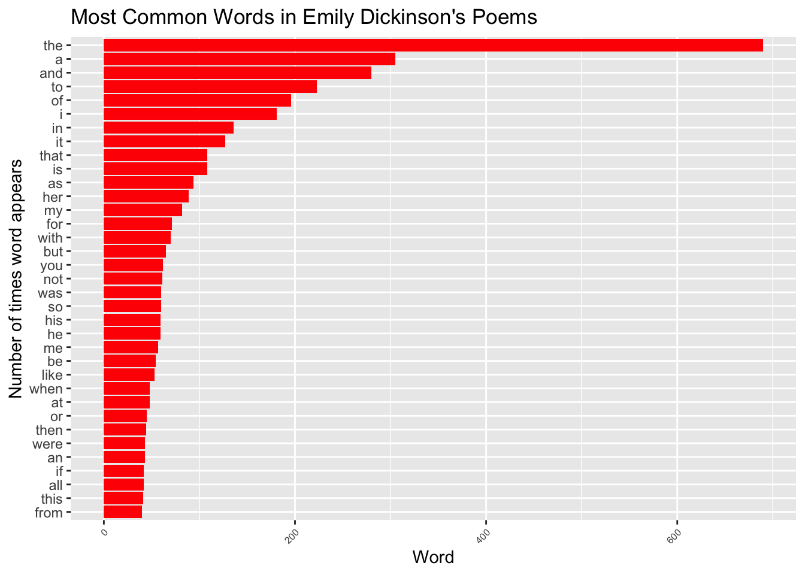
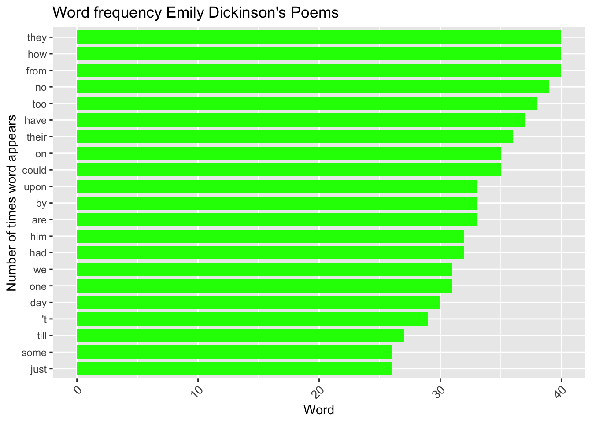
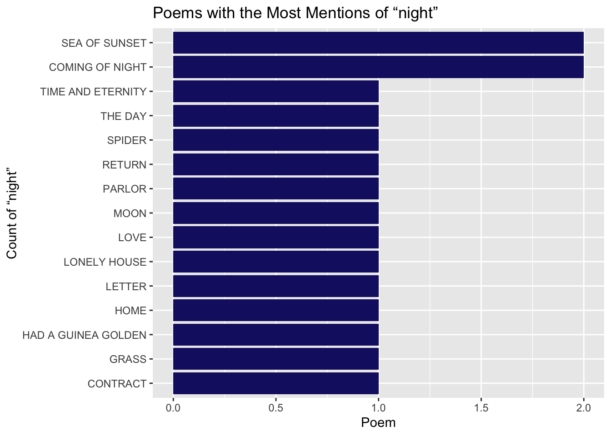
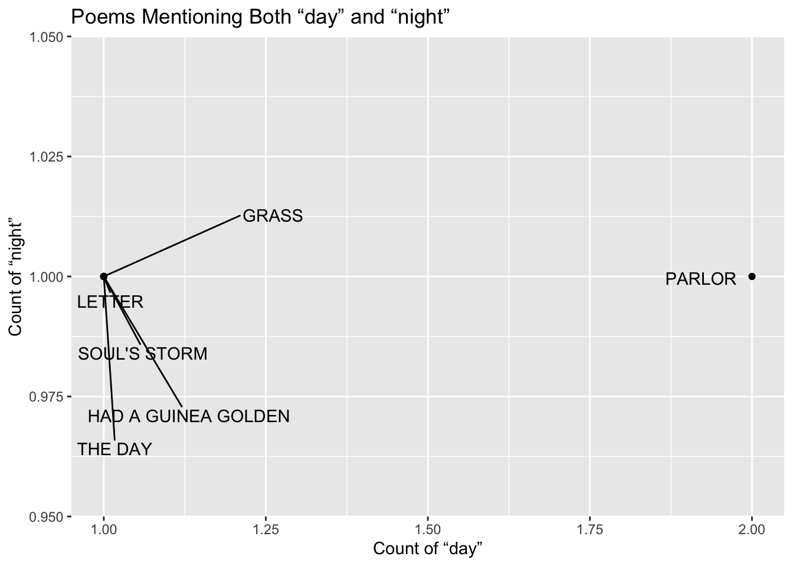

library(tidyverse)
library(ggrepel)Text Analysis
Today, I will be practicing my text analysis using str_*() commands, regular expressions, and plotting character-based data! To do this, I will be analyzing character data from all of Emily Dickinson’s Poems!
Some of the packages I will need:
The original data is from Gutenburg and is on the GitHub repo of Amherst-Statistics.
Accessing the data, printing some of the contents, and reading a poem!
devtools::install_github("Amherst-Statistics/DickinsonPoems") # this command was taken from the Amherst-Statistics repo linked above.
files_Dickinson <- system.file("extdata", package = "DickinsonPoems") # this command was taken from the Amherst-Statistics repo linked above.
head(list.files((files_Dickinson))) # first six files in the repo[1] "gutenberg1.txt001" "gutenberg1.txt002" "gutenberg1.txt003"
[4] "gutenberg1.txt004" "gutenberg1.txt005" "gutenberg1.txt006"poem166 <- paste(system.file("extdata", package = "DickinsonPoems"),
"gutenberg3.txt166", sep = "/")
readLines(poem166) # this command was taken from the Amherst-Statistics repo linked above. [1] "XX. "
[2] " "
[3] "OLD-FASHIONED. "
[4] " "
[5] "Arcturus is his other name, -- "
[6] "I'd rather call him star! "
[7] "It's so unkind of science "
[8] "To go and interfere! "
[9] " "
[10] "I pull a flower from the woods, -- "
[11] "A monster with a glass "
[12] "Computes the stamens in a breath, "
[13] "And has her in a class. "
[14] " "
[15] "Whereas I took the butterfly "
[16] "Aforetime in my hat, "
[17] "He sits erect in cabinets, "
[18] "The clover-bells forgot. "
[19] " "
[20] "What once was heaven, is zenith now. "
[21] "Where I proposed to go "
[22] "When time's brief masquerade was done, "
[23] "Is mapped, and charted too! "
[24] " "
[25] "What if the poles should frisk about "
[26] "And stand upon their heads! "
[27] "I hope I 'm ready for the worst, "
[28] "Whatever prank betides! "
[29] " "
[30] "Perhaps the kingdom of Heaven 's changed! "
[31] "I hope the children there "
[32] "Won't be new-fashioned when I come, "
[33] "And laugh at me, and stare! "
[34] " "
[35] "I hope the father in the skies "
[36] "Will lift his little girl, -- "
[37] "Old-fashioned, naughty, everything, -- "
[38] "Over the stile of pearl! "
[39] " "
[40] " "
[41] " "
[42] " " For future analyses, I will need a data frame, which will have one column as the identifier of the poem and the second column containing the text of that poem.
files <- list.files(files_Dickinson, pattern = "^gutenberg.*\\.txt\\d+$", full.names = TRUE)
poems_dataframe <- tibble(
title = basename(files),
text = map_chr(files, ~ paste(readLines(.x, warn = FALSE), collapse = "\n"))
)
head(poems_dataframe)# A tibble: 6 × 2
title text
<chr> <chr>
1 gutenberg1.txt001 "I. \n \nSUCCESS. \n \n[Published in \"A Masque of Poets\" …
2 gutenberg1.txt002 "II. \n \nOur share of night to bear, \nOur share of mornin…
3 gutenberg1.txt003 "III. \n \nROUGE ET NOIR. \n \nSoul, wilt thou toss again? …
4 gutenberg1.txt004 "IV. \n \nROUGE GAGNE. \n \n'T is so much joy! 'T is so muc…
5 gutenberg1.txt005 "V. \n \nGlee! The great storm is over! \nFour have recover…
6 gutenberg1.txt006 "VI. \n \nIf I can stop one heart from breaking, \nI shall …Let’s also add another column where we use a regular expression to extract parts of the the title of each poem. I will use a lookbehind to find the poem titles, since the titles of the poems are preceded by roman numerals in Dickinson’s poems. I will search for capital letters after the lookbehind, since Dickinson’s poems have titles that are capitalized, whereas the text is lowercase. Then I will use a lookahead to search for a period since the titles of the poems end with a period always. I will also remove all the poems that don’t have a title so it will be easier to reference them later!
poems_df_title <- poems_dataframe |>
mutate(
poem_title = str_extract(text, "(?<=\\b[A-Z]{1,4}\\.?\\s)[A-Z][A-Z'\\s]+(?=\\.)")
) |>
select(poem_title, text) |>
filter(!is.na(poem_title))
poems_df_title# A tibble: 127 × 2
poem_title text
<chr> <chr>
1 NOIR "III. \n \nROUGE ET NOIR. \n \nSoul, wilt thou toss again? \…
2 A LIBRARY "X. \n \nIN A LIBRARY. \n \nA precious, mouldering pleasure …
3 SECRET "XIV. \n \nTHE SECRET. \n \nSome things that fly there be, -…
4 LONELY HOUSE "XV. \n \nTHE LONELY HOUSE. \n \nI know some lonely houses o…
5 BOOK OF MARTYRS "XVIII. \n \nTHE BOOK OF MARTYRS. \n \nRead, sweet, how othe…
6 MYSTERY OF PAIN "XIX. \n \nTHE MYSTERY OF PAIN. \n \nPain has an element of …
7 BOOK "XXI. \n \nA BOOK. \n \nHe ate and drank the precious words,…
8 A FLOWER "VII. \n \nWITH A FLOWER. \n \nI hide myself within my flowe…
9 OUTLET "XI. \n \nTHE OUTLET. \n \nMy river runs to thee: \nBlue sea…
10 VAIN "XII. \n \nIN VAIN. \n \nI cannot live with you, \nIt would …
# ℹ 117 more rowsLet’s make a new data frame unnests the current vector we have so we will have a new row where each one is one word of each poem. I will use a regular expression to select only letters and apostrophes, so I only have words in these vectors.
poem_words <- poems_df_title |>
mutate(words = str_extract_all(text, "[A-Za-z']+")) |>
select(poem_title, words) |>
unnest(words)|>
mutate(words=str_to_lower(words))
head(poem_words)# A tibble: 6 × 2
poem_title words
<chr> <chr>
1 NOIR iii
2 NOIR rouge
3 NOIR et
4 NOIR noir
5 NOIR soul
6 NOIR wilt Let’s see what words are the most common in Emily Dickinson’s poems:
top_words <- poem_words |>
count(words, sort = TRUE)
head(top_words)# A tibble: 6 × 2
words n
<chr> <int>
1 the 690
2 a 305
3 and 280
4 to 223
5 of 196
6 i 181Okay, this is kind of boring… as we are getting words that are not unique to Emily Dickinson’s poetry, just to the English Language. Still, let’s visualize the top 35 words of this to see if we can pick out anything interesting!
top_35_words <- poem_words |>
unnest(words) |>
mutate(words = str_to_lower(words)) |>
count(words, sort = TRUE) |>
slice(1:35)
top_35_words |>
mutate(words = fct_reorder(words, n)) |>
ggplot(aes(y = words, x = n)) +
geom_col(fill='red') +
labs(
title = "Most Common Words in Emily Dickinson's Poems",
x = "Word",
y = "Number of times word appears"
)+
theme(axis.text.x = element_text(size = 6, angle = 45, hjust = 1))
This is still boring. So let’s look at the next 20 most common words to see if I can find any unique noun.
words_35_55 <- poem_words |>
unnest(words) |>
mutate(words = str_to_lower(words)) |>
group_by(words) |>
summarise(n = n()) |>
arrange(desc(n))|>
slice(35:55)
words_35_55 |>
mutate(words = fct_reorder(words, n)) |>
ggplot(aes(y = words, x = n)) +
geom_col(fill='green', width = 0.8) +
labs(
title = "Word frequency Emily Dickinson's Poems",
x = "Word",
y = "Number of times word appears"
)+
theme(axis.text.x = element_text(size = 10, angle = 45, hjust = 1))
There it is! So the most common noun in Emily Dickinson’s poetry is “day”.
Let’s see what poems use this word the most.
top_day_poems <- poems_df_title |>
mutate(day_count = str_count(str_to_lower(text), "\\bday\\b")) |>
arrange(desc(day_count)) |>
slice_head(n = 10)|>
select(poem_title, day_count)
top_day_poems# A tibble: 10 × 2
poem_title day_count
<chr> <int>
1 PARLOR 3
2 THE DAY 2
3 JUGGLER OF DAY 2
4 LONELY HOUSE 1
5 MYSTERY OF PAIN 1
6 WIFE 1
7 ARMIES 1
8 GRASS 1
9 WORLDS 1
10 DAY 1So, PARLOR is the poem that has the word “day” the most amount of times!
If Dickinson is writing about day, surely she too is writing about night? Let’s see.
top_night_poems <- poems_df_title |>
mutate(night_count = str_count(text, "(?i)\\bnight\\b")) |>
arrange(desc(night_count)) |>
slice_head(n = 10) |>
select(poem_title, night_count)
top_night_poems# A tibble: 10 × 2
poem_title night_count
<chr> <int>
1 SEA OF SUNSET 2
2 COMING OF NIGHT 2
3 LONELY HOUSE 1
4 GRASS 1
5 THE DAY 1
6 RETURN 1
7 CONTRACT 1
8 LETTER 1
9 HOME 1
10 PARLOR 1top15_night <- poems_df_title |>
mutate(night_count = str_count(text, "(?i)\\bnight\\b")) |>
arrange(desc(night_count)) |>
slice_head(n = 15)
top15_night |>
mutate(poem_title = fct_reorder(poem_title, night_count)) |>
ggplot(aes(y = poem_title, x = night_count)) +
geom_col(fill = "midnightblue") +
labs(
title = "Poems with the Most Mentions of “night”",
x = "Poem",
y = 'Count of “night”'
)
So, she does write about night as well!!!
Let’s visualize the poems where she might write about BOTH day and night!
day_night_both <- poems_df_title |>
mutate(
day_count = str_count(text, "\\bday\\b"),
night_count = str_count(text, "\\bnight\\b")
) |>
filter(day_count > 0, night_count > 0)
day_night_both# A tibble: 6 × 4
poem_title text day_count night_count
<chr> <chr> <int> <int>
1 GRASS "IX. \n \nTHE GRASS. \n \nThe grass… 1 1
2 THE DAY "XII. \n \nPSALM OF THE DAY. \n \nA… 1 1
3 LETTER "V. \n \nTHE LETTER. \n \n\"GOING t… 1 1
4 PARLOR "IV. \n \nDAY'S PARLOR. \n \nThe da… 2 1
5 HAD A GUINEA GOLDEN "XIX. \n \nI HAD A GUINEA GOLDEN. \… 1 1
6 SOUL'S STORM "XLIX. \n \nWe never know we go, --… 1 1day_night_both |>
ggplot(aes(x = day_count, y = night_count, label = poem_title)) +
geom_point() +
geom_text_repel(force=120) +
labs(
title = 'Poems Mentioning Both “day” and “night”',
x = 'Count of “day”',
y = 'Count of “night”'
) 